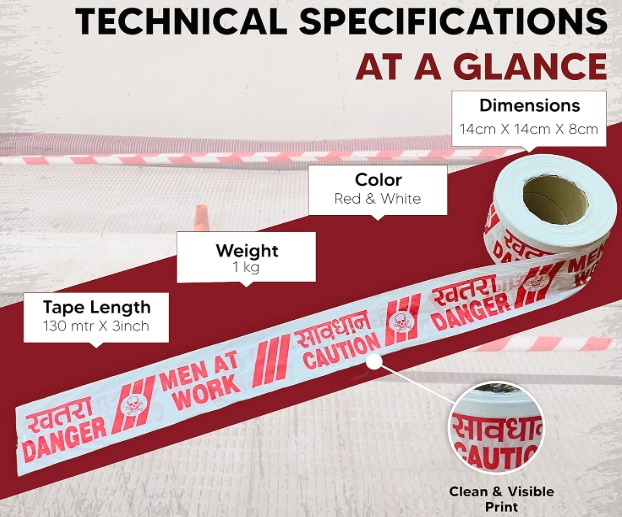
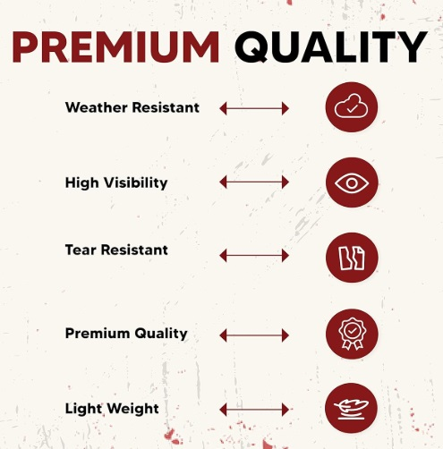
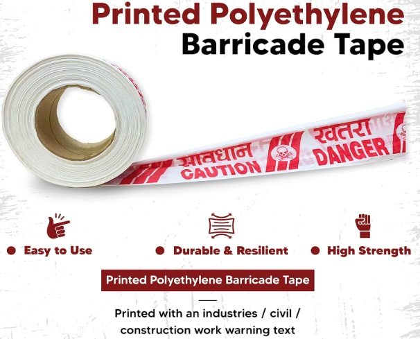
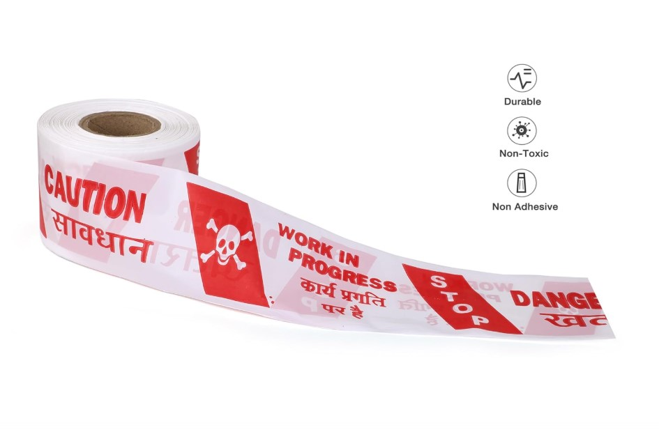
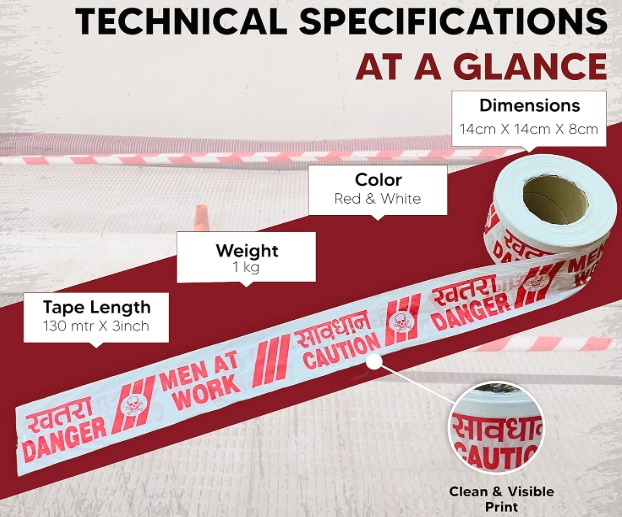
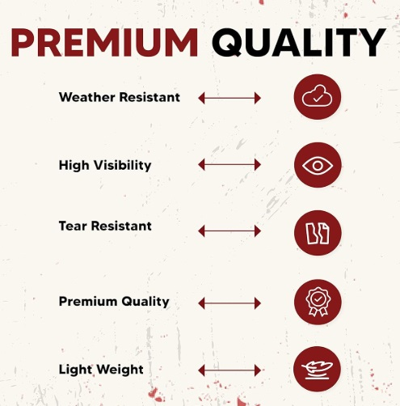
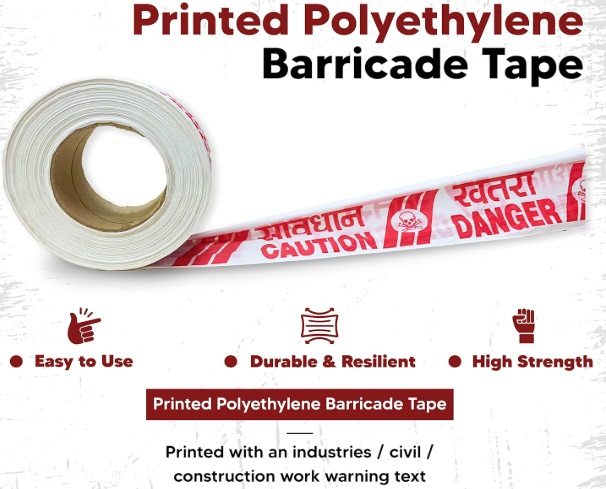
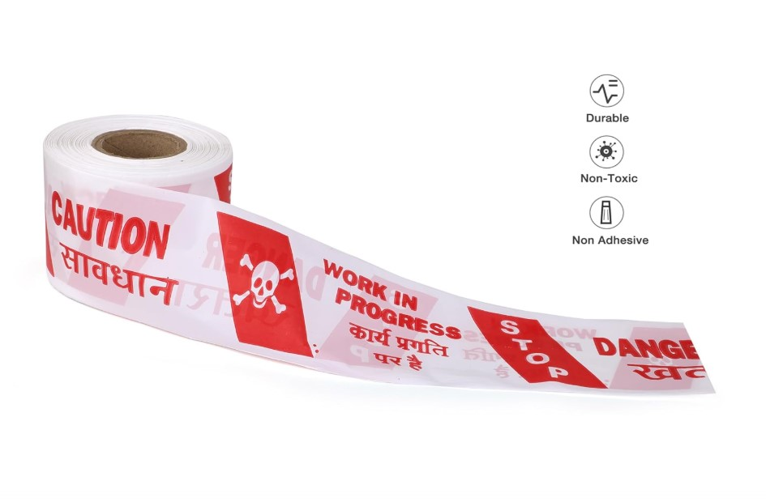

Product Overview
Caution Tape is used to provide a clear visual warning and restrict
access to potentially dangerous or controlled areas. Printed with
bold caution messages and high-contrast colours, these tapes help
improve workplace safety and prevent unauthorized entry.
Lightweight and easy to deploy, caution tapes are commonly used
across Indian industrial sites, construction zones, public spaces,
and maintenance activities where temporary safety marking is required.
Key Features
- High visibility for effective hazard communication
- Printed warning text for clear messaging
- Lightweight and easy to install or remove
- Weather-resistant for indoor and outdoor use
- Cost-effective safety marking solution
Specifications
- Material: Polyethylene (PE)
- Printing: “Caution” / “Warning” text
- Colours: Yellow & Black / Red & White
- Standard Width: Approx. 75 mm
- Roll Length: Varies by requirement
- Usage: Temporary safety and hazard marking
Applications & Use Cases
- Construction and maintenance zones
- Factories and industrial plants
- Restricted or hazardous areas
- Public safety and crowd control
- Emergency and temporary safety marking
Best Suited For
- Temporary hazard marking at construction and repair sites
- Restricting public access during maintenance work
- Factories and warehouses needing quick safety demarcation
Selection Note
For Indian outdoor conditions, brighter colour combinations are
recommended for visibility in dust, rain, and low-light situations.
Caution tape is intended for temporary use and should not replace
permanent floor marking solutions.
Commonly Used Along With
- Anti Skid Floor Marking Tapes
- Reflective Tapes for night visibility
- Safety Cones or Barricades
Product FAQs
-
Is caution tape suitable for outdoor use?
Yes. PE caution tapes are weather-resistant and suitable for short-term
outdoor use, including construction and maintenance sites.
-
How long can caution tape be used at a site?
Caution tape is intended for temporary marking. Duration depends on
exposure to sunlight, wind, and handling during use.
-
Can caution tape replace permanent safety markings?
No. Caution tape is designed for temporary hazard indication and should
not replace permanent floor markings or barriers.
-
Which colour combination offers best visibility?
Yellow and black is the most commonly used combination in Indian
industrial environments for high daytime visibility.
-
Is caution tape reusable?
In some cases, tape can be reused if removed carefully, but reuse
depends on adhesive condition and environmental exposure.
-
Is printed text necessary on caution tape?
Yes. Printed warning text improves clarity and ensures the hazard
message is easily understood by workers and the public.
 






